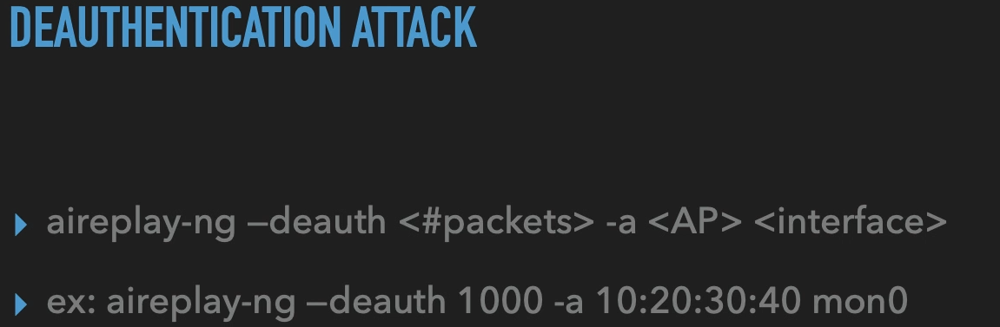
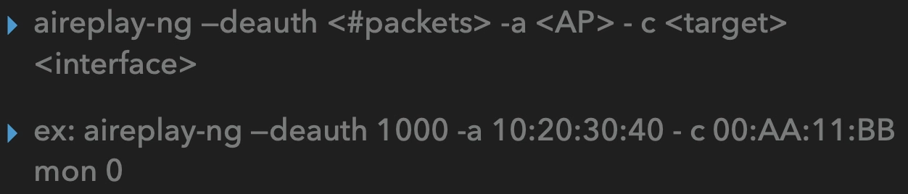
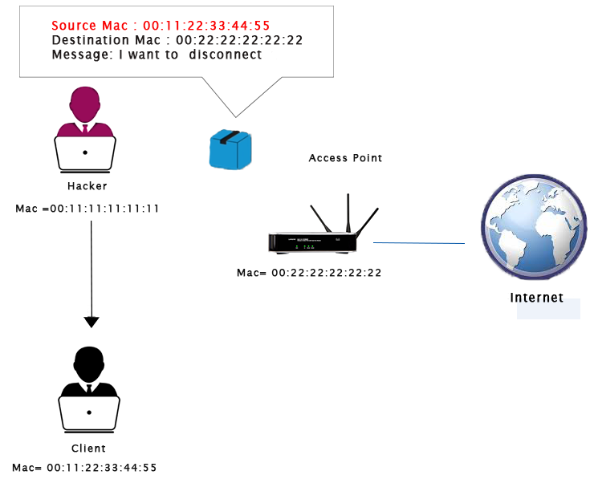
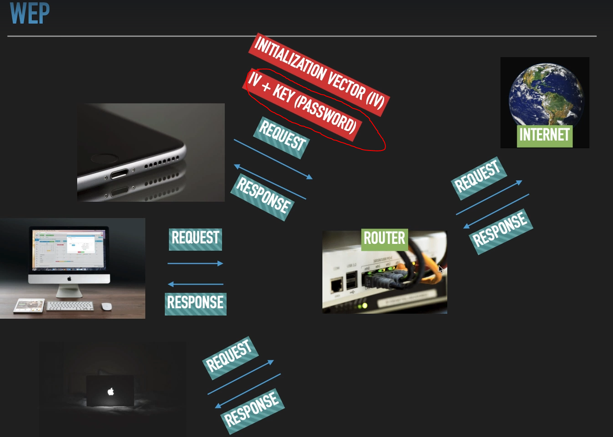
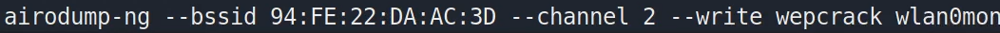
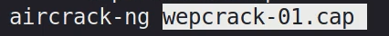
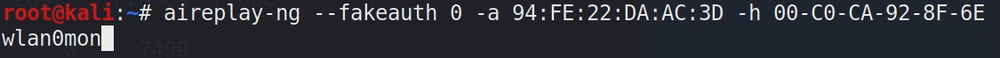
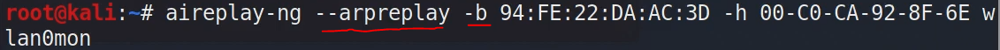

Deauthentication Attack
Deauthentication Attack (yetkisizlendirme atağı)

aireplay-ng-deauth <#gönderilecek PaketSayısı> -a <saldırılacak ağın MAC adresi> <arayüz> bu atak saldırılacak ağdaki tüm cihazlara yapılır ve başarılı olma şansı spesifik bir cihaza yapılmasına göre daha düşüktür. Eğer tek bir cihaza spesifik atak yapmak istiyorsak o zaman;

bu şekilde ek olarak "
-c <hedefin mac adresi>" belirterek saldırı yapacağımız ağda bulunan spesifik bir hedefe saldırı yapıp onu yetkisizlendirip ağdan atabiliriz ve başarı şansımız daha yüksek olur.
Deauthentication Attack mantığı şu şekilde çalışır:
WEP şifreleme türünün çalışma mantığı
Yukarda ki resimde kırmızı yazılı ve işaretli kısımda gördüğümüz üzere modem WEP ile şifrelendiğinde cihazlar arası request--response alışverişi yaparken “
IV(initialization vector) + KEY (PASSWORD)” adında iki değişken kullanır. Bu ikisi birleştirilip öyle şifrelenir. İşte bu alışveriş esnasında her bir request-response esnasında mesela telefondan modeme “
IV+KEY(PASSWORD)” şeklinde değil ama “
IV” kısmı gidiyor. Dışardan bir kişide bazı yöntemleri kullanarak bu “
IV” kısmını görebiliyor “
KEY(PASSWORD)” kısmını göremiyor. İşte bu noktada şöyle bir açık ortaya çıkıyor; bu “
IV” kısmı sadece 24 bitlik küçük karakterlerden oluşuyor o yüzden belli bir yerden sonra tekrar etmeye başlıyor. Bu tekrar etme durumundan dolayı belli başlı programlar kullanılarak devamlı tekrar eden patternları, şemaları birbirleriyle eşleştirerek şifrelerle “
KEY(PASSWORD)” eşleştirilip şifre kırılabiliyor.

bu şekilde hedef bir ağ belirterek wepcrack adında bir dosyaya toplanan paketleri kaydettiriyoruz.

ardından bu wepcrack-01.cap uzantılı dosyayı aircrack-ng ile çalıştırıyoruz ve bize “IV-PASSWORD” kısmında ki “IV” leri toplamaya başlıyor. O anda ağda ne kadar çok trafik olursa o kadar hızlı toplar. İşte bu noktada bu ağa fakeauth yöntemiyle kendimizi bağlanmış gibi gösterip ardından o ağda trafik ağı üreterek süreci hızlandırabiliriz.
Fakeauth Attack Bu atak kendimizi seçeceğimiz hedef bir ağa sanki bağlanmışız gibi göstermemizi sağlar.

Yukarıda olduğu gibi önce -a <
bağlanacağımız hedef MAC adresi> ardından -h <
kendi cihazımızın MAC adresi> ve <
wlan0mon> şeklinde bağlanacağımız arayüz ismi (wi-fi adapter vb) belirtip kendimizi o ağa bağlanmış gibi gösterebiliriz.
Ağa bu şekilde bağlanmış gibi gösterdikten sonra;

bu şekilde yine aireplay-ng ile “--arpreplay -b <
hedef MAC> -h <
kendi MAC adresimiz>
wlan0mon” komutu ile o ağda örneğin WEP algoritmasını kullanan bir ağ ise bu algoritmada ağ içinde paket alışverişi esnasında üretilen “
IV-PASSWORD” şeklinde ki “
IV” kısmını okuyabilir hale gelir ve de bu “
IV” kısmı bi süre sonra tekrar eden algoritmalar oldukları için
aircrack-ng yöntemiyle kolayca “
PASSWORD” kısmına erişip şifreyi kırabiliriz.
{kind=link}